Linear Models
Lecture 2
Linear Regression
Linear models
Having learnt a little about what it means to learn, we’re going to look at our first Machine Learning algorithm, the staple for much of statistics, numeric prediction using a linear model.
What is a linear model?
A linear model is a prediction (a response) to an input variable. We have the following terms:
- Response/prediction/dependant – the output of the model.
- feature/variable/independant variable – the variable upon which the prediction is being made.
For a linear model based on one independant we have the following:
\[ y = \beta_0 + \beta_1 x \]
where \(y\) is the response/output/prediction of the model, \(x\) is the independant variable, and \(\beta_0, \beta_1\) are the model parameters.
Model parameters
Slope & intercept
If we look at our linear model equation, we’ll notice that it’s the same equation for a straight line.
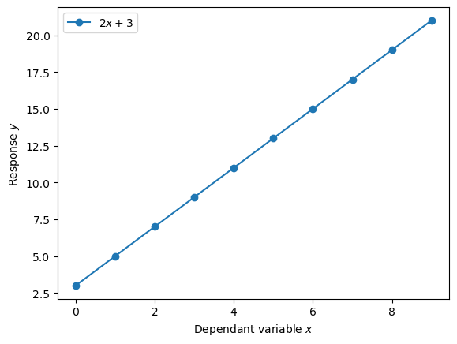
As we’ve seen, the linear model, or linear regression, has two parameters: \(\beta_1, \beta_0\). What do these parameters represent?
- The \(\beta_1\) parameter is the slope or strength of relationship between the independant variable and the response.
- Meanwhile, the \(\beta_0\) parameter is called the intercept, as it’s the value of the response when the independant variable is zero.
Let’s look at these two parameters.
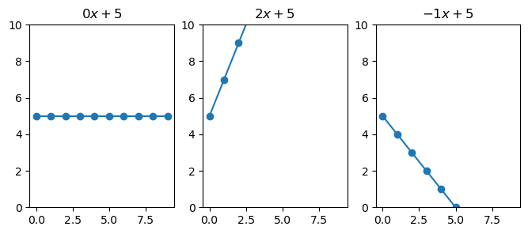
Here we see that when \(\beta_1\) is 0 (left figure), any change in \(x\) results in 0 change in \(y\). While, with \(\beta_1 = 2\), \(y\) increases two-fold by every change in \(x\). Finally, when the slope is negative, we see that \(y\) decreases.
Notice how the line is at 5 when \(x\) is zero, this is because \(\beta_0 = 5\).
Multiple variables
So we’ve seen how we can take an input variable x, and through the combination multiplication and addition with the learnt \(\beta_0, \beta_1\) values, we can create a pretty accurate prediction.
However, this was only for a singular variable.
In our dataset, we have many variables/features/columns that we may want to use for our prediction. It may be possible to get an even more accurate prediction by adding features to our linear regression model.
\[ y = \beta_0 + \sum_{i=1}^m x_i \beta_i \]
where \(m\) is the number of features/variables we’re adding to the model.
Supporting example
Let’s have a look at how we would use this linear model with one of the datasets: The Boston housing prices.
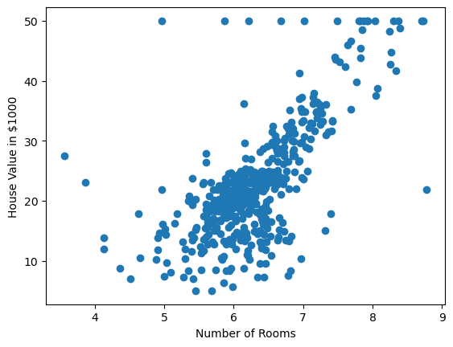
Training a linear regressor
Let’s fit a linear model
We have seen that there seems to be some correlation between the number of rooms and the house price. I.e. we can use the number of rooms of the house to get the estimated price. To get an estimated price we’ll use our linear model:
\[ y = \beta_0+\beta_1 x \]
In this case, \(x\) will be the number of rooms. But what values should we set for \(\beta_0\) and \(\beta_1\)? Or put another way, what is optimal value for our model parameters.
We’ll return to the question of optimal later, but for now, let’s just select some random values!
\[\begin{aligned} \beta_0 = 1 \\ \beta_1 = 1 \end{aligned} \]
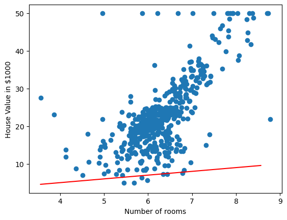
Well that doesn’t look very good, it could be ‘fit’ better to what we’re seeing in the scatter plot! I wonder how wrong the linear model is – how incorrect our predicted house prices are?
Evaluating our initial linear model
To evaluate how well, or in this case, how badly our linear model is doing, let’s compare the predicted value from the model against the actual house price. For example, we’ll take a single sample from our dataset.
If we have 4 rooms, our model estimates the house price to be \(2(4) + 5 = 13\), $13,000, but the actual cost was $24,000. This means we have underestimated the cost by $11,000.
What we’ve done there is the following:
\[ \delta = | y - \hat{y} | \]
where \(\hat{y}\) is \(\beta_0 + \beta_1 x\)
We’ve calculated the difference or delta between the real house price \(y\) and the predicted house price.
That gives us the error for one sample though, what about for the whole dataset? Well we could take the mean over all samples:
\[ \text{MAE}(X; \beta_0,\beta_1) = \frac{1}{N}\sum_{i=0}^N | y_i - (\beta_0+\beta_1x_i) | \]
If we calculate that our linear model we see that the average difference between our estimated value and real value is $15,000!
Another common method of calculating how well or how badly our model is performing is to use the sum of squared residuals or perhaps more commonly known in the field of machine learning: mean squared error (MSE).
\[ \text{MSE}(X; \beta_0, \beta_1) = \frac{1}{N}\sum_{i=0}^N (y - (\beta_0 + \beta_1 x_i))^2 \]
Getting better model parameters
Okay, so we made our initial guess at the model parameters (random values for \(\beta_0, \beta_1\)), and these weren’t very good. We were incorrectly guessing the house value by $15,000. So how do we get better values?
Well if we visualise how badly we do vs the value for \(\beta_1\) we get the following:
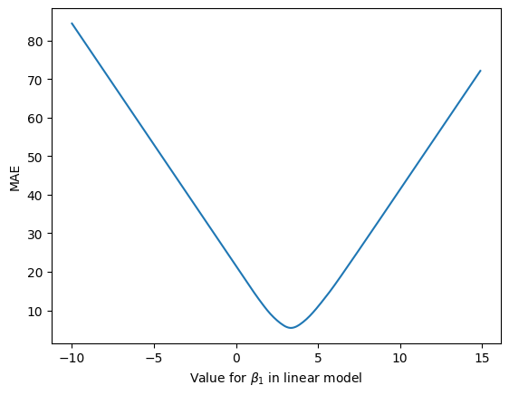
In figure 44, we see that as we change the \(\beta_1\) parameter, the mean absolute error (MAE), i.e. the average difference between the predicted house prices and the true house prices, changes. Ideally, we would like the error or loss to be as low as possible. In this case, when \(\beta_0 = 1\) the lowest possible loss we can hope to achieve with the linear model is ~ $5,500.
But what value for \(\beta_1\) gets us this lowest value for the loss? Looking at the graph, we see that the lowest point on the loss curve is somewhere between 0 and 5. Maybe even 4? While we could look at the curve and pick these parameter values, we’re going to use a better method – one that give us an optimal value for this loss curve automatically.
We’re going to look at the method called Gradient Descent.
If we visualise our loss curve again, and visualise where \(\beta_1 = 1\) is on this curve, we will see:
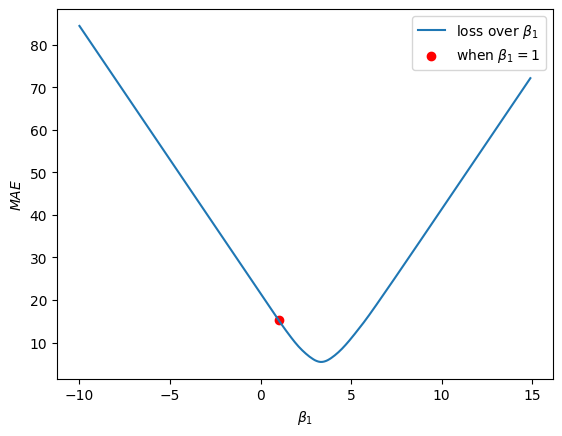
So we want this rot dot to move down the loss curve and reach the bottom of the curve. Using the Gradient Descent algorithm, we’re going to take very small steps down the loss curve.
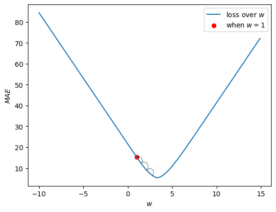
To determine which way is up, and which way is down the curve, we use the Gradient of the curve (hence Gradient Descent). We compute the gradient using finite differences method:
\[ \Delta = \frac{f(x+h) - f(x)}{h} \]
where \(f(x)\) is the loss when \(\beta_1\) takes on the value of \(x\). \(h\) is a very small value.
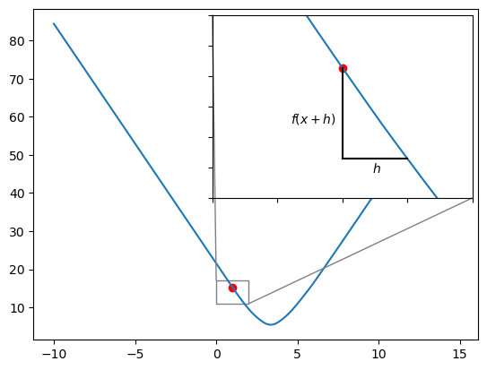
If we select \(h = 0.5\) then we will have the formula:
\[ \Delta_{\beta_1} = \frac{L(\beta_1 + 0.5) - L(\beta_1)}{\beta_1} \]
where \(L\) represents our loss function, MAE. If we calculate this we have:
\[\begin{aligned} \Delta_{\beta_1} &= \frac{L(\beta_1 + 0.5) - L(\beta_1)}{h} \\ &= \frac{L(1.5)- L(1)}{0.5} \\ &= \frac{12 - 15}{0.5} \\ &= -6.0 \end{aligned} \]
Given that the gradient is a negative number, we know that the curve is going down/decreasing. So we will want to move \(\beta_1\) in this direction – we want to move \(\beta_1\) so that the loss decreases.
\[ \overline{\beta_1} = \beta_1 - \eta \Delta_{\beta_1} \]
If we plug in the numbers we’ve calculated for when \(\beta_1 = 1\) we get and \(eta = 0.5\):
\[\begin{aligned} \overline{\beta_1} &= \beta_1 - \eta \Delta_{\beta_1} \\ &= 1.0 - (0.5 * -6.0) \\ &= 1.0 - (-3.0) \\ &= 4.0 \end{aligned} \]
Our new value for the \(\beta_1\) parameter (\(\overline{\beta_1}\)) is computed by taking its original value and subtracting the gradient modulated/multiplied by \(\eta\). \(\eta\) in this case is what will allow us to take our small steps. It is important to set \(\eta\) to a suitably small value, as high values for \(\eta\) will cause the Gradient Descent to behave erratically, and even, make our loss worse!
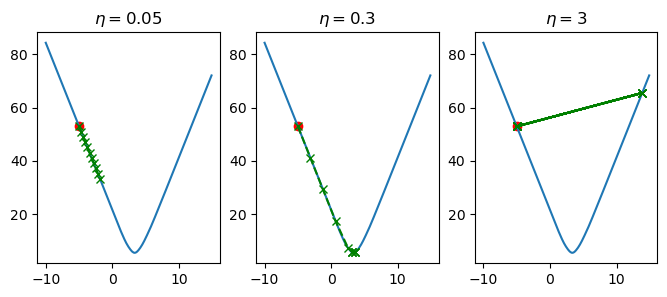
In figure 65, we’ve varied the value of \(\eta\) and computed 10 steps of updating the \(\beta_1\) parameter in our linear model. When \(\eta=0.05\), we see that \(\beta_1\) is slowly being updated in a way that is causing our loss to decrease, but it is more so slowly that we don’t reach the optimal value for \(\beta_1\). When \(\eta=3\), each change in \(\beta_1\) is too large, so we over-shoot the optimal value, and end up bouncing back and forth without ever improving. Finally, when we set \(\eta=0.3\), the changes in \(\beta_1\) are sufficiently large enough such that we reach the global minima in time, but they are also small enough so that we don’t over-shoot this same minimum.
If we then apply the Gradient Descent algorithm to both parameters of the linear model \(\beta_0, \beta_1\), then we can find the optimal trend line for this data. Furthermore, visualising this will look something like figure 68.
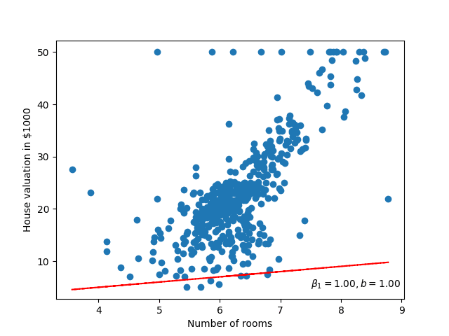
Fitting the line directly
Solving the linear model directly
The way we’ve trained our linear regression is not necessarily the best, yes it does help us understand how we can optimise to a solution (especially if not all of our data can fit into memory at the same time). But, when it comes to linear models, we can compute the values for \(\beta_0, \beta_1\) directly.
This is called a closed-form solution.
\[ \beta_1 = \frac{N \sum xy - \sum x \sum y}{N \sum (x^2) - \sum (x)^2} \]
\[ \beta_0 = \frac{\sum y - \beta_1 \sum x}{N} \]
where \(N\) is the number of samples in our data.
Logistic Regression
Moving from regression to classification
We now turn to the problem of classification. We have seen in some of our toy datasets (namely the Iris dataset), that we don’t want to predict a continuous value, but rather predict the class each data point belongs to.
To predict the class, we use a model called a logistic regressor.
A logistic regressor is a model from the class of `Generalised Linear Models’ (GLM). In fact, the linear regressor we investigated in the previous section is also part of this class of models.
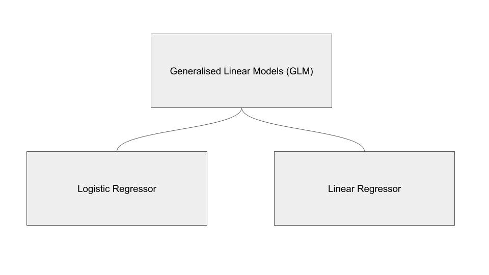
Multi-class vs binary classification
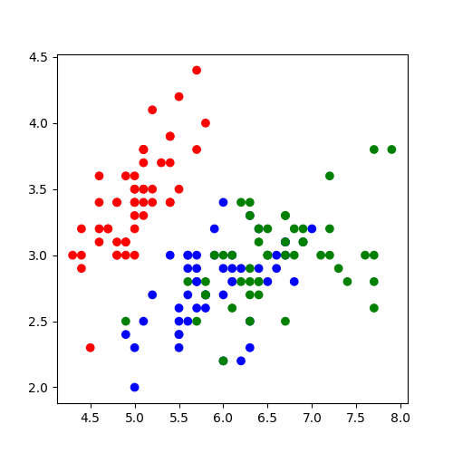
In terms of Iris dataset, this means we want to select one class from 3 possible classes.
We’ll return to the problem of multiple classes later. But let’s suppose that we only want to decide if the flower is a Setosa, or not Setosa. We’ve changed our classification problem from multi-class to binary classification.
Probability / likelihood
Probability likelihood
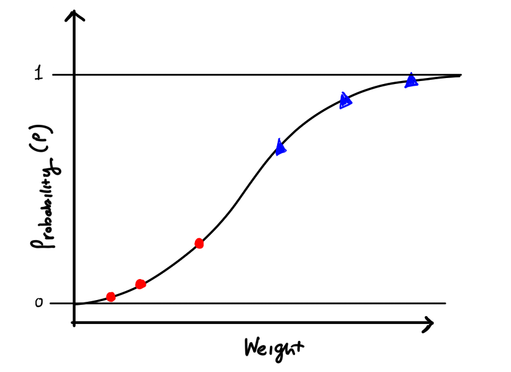
Our model will eventually look like this, where we have two classes of points, and for each point we give a probability (p) that our point belongs to a class.
Making it linear
If we apply the logarithm to each probability, we get back to our linear line.
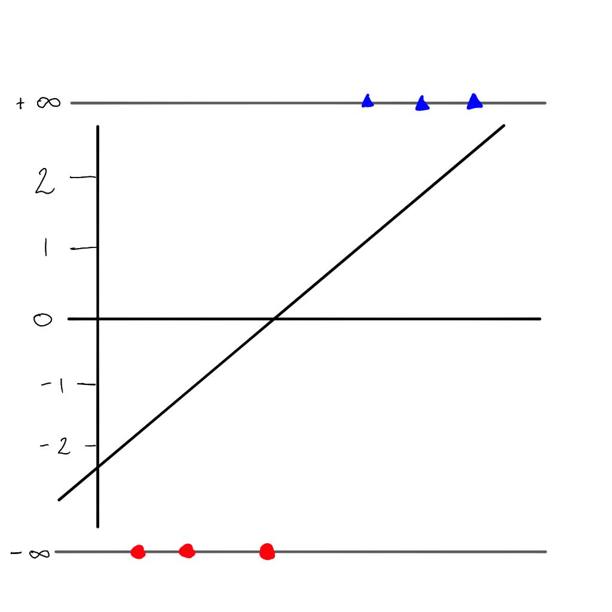
\[ \log \left( \frac{p}{1-p} \right) \]
Maximum likelihood
Enter the maximum likelihood
But there is a problem…we can no longer use the sum of residuals as the value would always be \(\infty\), but instead we can use the maximum likelihood. First we project each sample to its ‘odds’ (i.e. the value of \(y\) on the linear line).
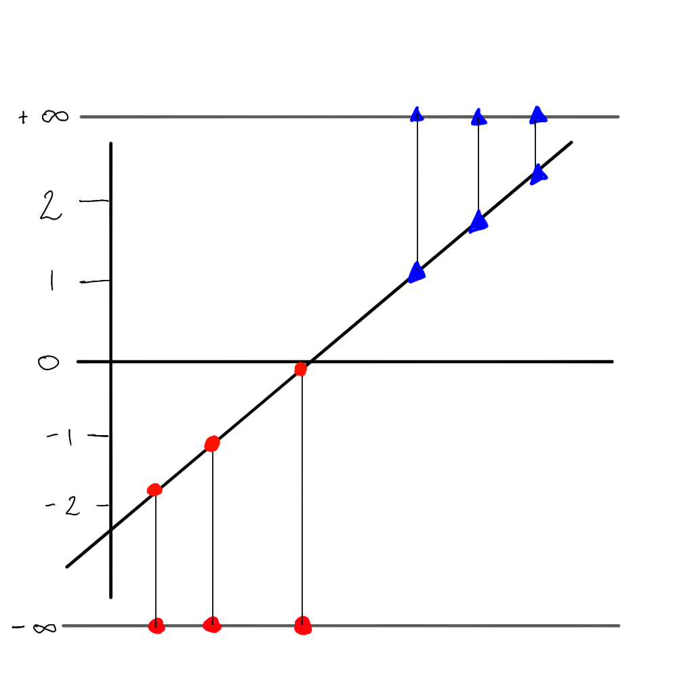
Back to the probability curve
Our logistic or ‘sigmoid’ function:
\[ p = \frac{1}{1 + e^{-(\beta_0+\beta_1x)}} = \frac{e^{(\beta_0+\beta_1x)}}{1 + e^{(\beta_0+\beta_1x)}} \]
Likelihood
Probability of class 1
\[ p(1) = p \]
Probability of class 0 (or not class 1).
\[ p(0) = 1 - p \]
Maximum likelihood loss (which we wish to maximise), using the points on the probability curve:
\[ L = (0.9) + (0.89) + (0.6) + (1 - 0.4) + (1 - 0.2) + (1 - 0.05) \]
Optimising the curve
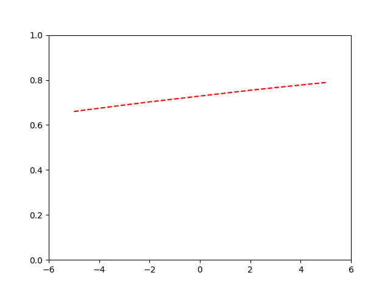
Binary Cross-Entropy
Binary Cross-Entropy
We could still use MSE in order to compute our models loss. This may still work. But there is another objective function that we would use for binary classification problems: Binary Cross-entropy (BCE).
\[ \text{BCE}(X; \beta_0, \beta_1) = -(Y \log(\beta_0+\beta_1*X) + (1 - Y) \log(1- \beta_0+\beta_1*X)) \]
Issues when using MSE for binary classification:
- MSE is non-convex for binary classification problems.
- MSE assumes the data was generated from a normal distribution, while binary classification problems form a Bernoulli distribution.